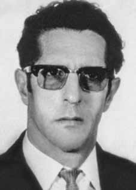

Miguel
Sabat
Nuet
CIRCUNSTÂNCIAS DA MORTE
Segundo os órgãos da repressão, Miguel Sabat Nuet foi encontrado morto em uma cela do Departamento Estadual de Ordem Política e Social de São Paulo (DOPS/SP) no dia 30 de novembro de 1973. Conforme versão divulgada pelos órgãos da repressão, ele teria cometido suicídio. Na documentação referente ao caso, encontrada pela Comissão de Familiares de Mortos e Desaparecidos Políticos nos arquivos do Departamento de Ordem Política e Social (DOPS/SP), em 1992, há um relato das circunstâncias e dos responsáveis pela detenção de Miguel Sabat Nuet.
Relata-se que uma mala fora abandonada em um trem, por um passageiro, muito agitado e nervoso, que desceu do veículo em movimento na estação Barra Funda, em São Paulo (SP). No informe, consta a descrição física do passageiro e a anotação: “passado telex nº 23509 para capturar o Miguel Sabat Nuet.” Na mala que Miguel carregava, foram encontrados documentos pessoais, tais como recortes de jornais, revistas, anotações em cadernos, fotografias, informações pessoais e cartas escritas a próprio punho que comprovavam a perseguição política ao militante. Um ofício do delegado do DOPS, Adolpho Magalhães Lopes, encaminhado ao DOI/CODI de São Paulo, revela que Miguel foi abordado por agentes policiais no referido dia às 16h30 e, posteriormente, encaminhado ao DOPS, às 19h30 para inspeção.
A documentação contém igualmente indícios que permitem considerar que houve interesse em alterar as circunstâncias de morte de Miguel Nuet, já que, conforme consta no Dossiê Ditadura: Mortos e Desaparecidos Políticos no Brasil (1964-1985), a requisição de exame ao IML foi marcada com a anotação “T” – referência feita àqueles considerados “terroristas” pelos agentes da repressão.
Dos documentos constam, ademais, a relação de 19 presos, datada de 12 de dezembro de 1973, assinada por José Aírton Bastos e Manoel Nascimento da Silva, em que constam informações de alguns estrangeiros, “presos à disposição das autoridades”, que estavam em situação irregular ou que aguardavam para serem expulsos do país. Contudo, o seu caso estava sujeito às decisões do departamento de “ordem social”, tal como apontado pelo documento. Após sua morte, o exame necroscópico atestou que ele teria se enforcado na própria carceragem do DOPS/SP, em 30 de novembro de 1973. Seu corpo chegou ao cemitério Dom Bosco, em Perus, São Paulo, no mesmo dia em que os corpos de Antônio Carlos Bicalho Lana e Sônia Maria de Moraes Angel Jones. Teriam, portanto, sido sepultados juntos. Com a descoberta da Vala de Perus, em 1989, a ossada de Miguel foi encontrada, embora somente em 2008 tenha sido possível o reconhecimento de seus restos mortais.
Após descobertas feitas sobre a “Operação Condor”, e em decorrência de constantes averiguações feitas pela Comissão de Familiares de Mortos e Desaparecidos Políticos e pelo jornalista da Folha de S.Paulo, Rubens Valente, os familiares de Miguel Sabat Nuet foram identificados na Espanha e na Venezuela. A partir de então, o Ministério Público Federal (MPF) de São Paulo instaurou ação para localizar seus parentes, a fim de ser realizada a coleta de sangue para reconhecimento da ossada. Em 1º de abril de 2008, seus restos mortais foram exumados e, no dia 28 de agosto de 2008, a imprensa divulgou que o laboratório Genomic Engenharia Molecular havia comprovado que a ossada realmente referia-se a ele. A matéria intitulada “Família quer apurar morte de espanhol durante a ditadura”, de 20 de janeiro de 2008, da Folha de S.Paulo, afirma que Miguel Sabat foi preso no dia 9 de outubro de 1973 pelo DOPS, para “averiguação de subversão” e, após um mês e meio, foi encontrado morto na cela, num suposto caso de suicídio.
Explica-se que, durante 13 anos, não se pôde averiguar o caso porque a família de Nuet não havia sido encontrada para obter a identificação e exumação dos restos mortais. Menciona-se também que a guia de enterro foi emitida pelo Serviço Funerário indicando que havia sido sepultado no terreno 485 da quadra 7 do Cemitério Dom Bosco, no mesmo dia e ao lado dos militantes da ALN Sônia Maria Moraes Angel Jones e Antonio Carlos Bicalho Lana, em 1º de dezembro de 1973.
Na matéria “Filha quer exumação do corpo para saber o que aconteceu”, da Folha de S.Paulo, de 20 de janeiro de 2008, Maria del Carmen e Minerva Sabat, com quem Miguel manteve contato durante seus 23 anos de vida na Venezuela, afirmaram: “nunca acreditamos em suicídio, mesmo porque, em um dos documentos que vimos na embaixada brasileira em Caracas, constava que ele tinha fraturas. Para nós, Miguel foi torturado até a morte”. Outra matéria do mesmo jornal, intitulada “Procuradoria quer localizar corpo de espanhol morto” e datada no dia 22 de janeiro de 2008, menciona que o MPF entrou com ação para tentar localizar a sepultura de Miguel Nuet, sendo que a procuradora da República Eugênia Favero relatou dificuldades para localizar o corpo, em virtude da desorganização do cemitério de Perus e mudança na numeração dos locais onde estariam os corpos.
O jornal traz, também, importante depoimento da Sônia Miriam Draibe, que ficou presa no DOPS, no mesmo período em que Miguel. Na matéria intitulada “Ex-militante se lembra de gritos de ajuda em espanhol vindos da pior cela do DOPS”, ela afirma ter ouvido Nuet gritar da cela “conhecida como “fundão‟ ou “forninho”, pedindo por ajuda. Segundo sua descrição: “Sempre ouvimos descrições horrorosas sobre aquela cela. Isolavam a pessoa com uma punição. Era uma tortura. (…) Lembro bem dos gritos, duravam o dia todo. Ele repetia brados, gritos e invocações. Dizia: “Maria, Socorro, Maria del Socorro‟, “Santa Maria‟, “Ajuda-me‟, recordou-se Sônia.” Sônia afirma que o argentino era a única pessoa presa do DOPS entre os dias 23 a 26 daquele mês, sendo transferida para o DOI-CODI após essa data. Aborda, ainda, que o delegado Sérgio Fernando Paranhos Fleury era o responsável pelos interrogatórios na delegacia.
O parecer do conselheiro Augustino Pedro Veit, de 15 de outubro de 2008, anexado aos autos do dossiê da CEMDP, foi favorável ao reconhecimento de Miguel Sabat como militante político, sob o argumento de que os documentos apresentados retratam a perseguição sofrida, com posterior prisão no DOPS/SP, e seu sepultamento como indigente em Perus, com indícios de que teria sido torturado até a morte. O ofício n°200/AT-GAB.PREF/2008, expedido em 15 de outubro de 2008, em nome do prefeito de São Paulo, comunica ao presidente da CEMDP, Marco Antonio Rodrigues Barbosa, que os restos mortais de Miguel Sabat haviam sido localizados no Cemitério de Perus.
Decreto expedido pelo Presidente da República, em julho de 2009, concedeu indenizações à família de Miguel Sabat Nuet, considerando-o como morto em razão da participação ou acusação de participação de atividades políticas, assim como tipifica o art.4°, I, alínea, b, com base na Lei nº 9.140/1995. Em 12 de dezembro de 2011, em cerimônia realizada na Faculdade de Direito da Universidade de São Paulo (USP), a Ministra de Estado Chefe da Secretaria de Direitos Humanos da Presidência da República, Maria do Rosário Nunes, oficializou a entrega dos restos mortais aos filhos de Miguel Sabat, Maria Del Carmen, Miguel e Lorenzo.
According to the repression bodies, Miguel Sabat Nuet was found dead in a cell at the São Paulo State Department of Political and Social Order (DOPS/SP) on November 30, 1973. According to the version released by the repression bodies, he committed suicide. In the documentation relating to the case, found by the Commission of Relatives of Political Dead and Disappeared in the archives of the Department of Political and Social Order (DOPS/SP), in 1992, there is an account of the circumstances and those responsible for the detention of Miguel Sabat Nuet.
It is reported that a suitcase was abandoned on a train, by a very agitated and nervous passenger, who got off the moving vehicle at Barra Funda station, in São Paulo (SP). The report contains the physical description of the passenger and the note: “telex pass no. 23509 to capture Miguel Sabat Nuet.” In the suitcase that Miguel was carrying, personal documents were found, such as newspaper clippings, magazines, notes in notebooks, photographs, personal information and letters written in his own handwriting that proved the political persecution of the militant. A letter from the DOPS delegate, Adolpho Magalhães Lopes, sent to the DOI/CODI of São Paulo, reveals that Miguel was approached by police agents on that day at 4:30 pm and subsequently sent to the DOPS at 7:30 pm for inspection.
The documentation also contains evidence that allows us to consider that there was an interest in changing the circumstances of Miguel Nuet's death, since, as stated in the Dossier Ditadura: Mortos e Desaparecidos Políticos no Brasil (1964-1985), the examination request to the IML was marked with the notation “T” – a reference made to those considered “terrorists” by the agents of repression.
The documents also include a list of 19 prisoners, dated December 12, 1973, signed by José Aírton Bastos and Manoel Nascimento da Silva, which contains information about some foreigners, “prisoners at the disposal of the authorities”, who were in an irregular situation or who were waiting to be expelled from the country. However, his case was subject to the decisions of the “social order” department, as pointed out by the document. After his death, the necroscopic examination confirmed that he had hanged himself in the DOPS/SP prison, on November 30, 1973. His body arrived at the Dom Bosco cemetery, in Perus, São Paulo, on the same day as the bodies of Antônio Carlos Bicalho Lana and Sônia Maria de Moraes Angel Jones. They would therefore have been buried together. With the discovery of Vala de Perus, in 1989, Miguel's bones were found, although it was only in 2008 that it was possible to recognize his remains.
After discoveries made about “Operation Condor”, and as a result of constant investigations carried out by the Commission of Relatives of the Political Dead and Missing and by Folha de S.Paulo journalist, Rubens Valente, Miguel Sabat Nuet's family members were identified in Spain and Venezuela. From then on, the Federal Public Ministry (MPF) of São Paulo initiated action to locate his relatives, in order to collect blood to recognize the bones. On April 1, 2008, his remains were exhumed and, on August 28, 2008, the press reported that the Genomic Engenharia Molecular laboratory had proven that the remains actually referred to him. The article entitled “Family wants to investigate the death of a Spaniard during the dictatorship”, dated January 20, 2008, in Folha de S.Paulo, states that Miguel Sabat was arrested on October 9, 1973 by the DOPS, to “investigate subversion” and, after a month and a half, he was found dead in his cell, in an alleged case of suicide.
It is explained that, for 13 years, the case could not be investigated because Nuet's family had not been found to obtain the identification and exhumation of the remains. It is also mentioned that the burial guide was issued by the Funeral Service indicating that he had been buried in plot 485 of block 7 of the Dom Bosco Cemetery, on the same day and alongside ALN activists Sônia Maria Moraes Angel Jones and Antonio Carlos Bicalho Lana, on December 1, 1973.
In the article “Daughter wants body exhumed to find out what happened”, in Folha de S.Paulo, on January 20, 2008, Maria del Carmen and Minerva Sabat, with whom Miguel maintained contact during his 23 years of life in Venezuela, stated: “We never believed in suicide, especially because, in one of the documents we saw at the Brazilian embassy in Caracas, it was stated that he had fractures. For us, Miguel was tortured to death”. Another article from the same newspaper, entitled “Attorney's Office wants to locate dead Spaniard's body” and dated January 22, 2008, mentions that the MPF took action to try to locate Miguel Nuet's grave, and the Public Prosecutor Eugênia Favero reported difficulties in locating the body, due to the disorganization of the Perus cemetery and the change in the numbering of the places where the bodies would be located.
The newspaper also contains an important testimony from Sônia Miriam Draibe, who was imprisoned at the DOPS during the same period as Miguel. In the article titled “Ex-militant remembers screams for help in Spanish coming from the worst DOPS cell”, she claims to have heard Nuet shout from the cell “known as “fundão” or “forninho”, asking for help. According to her description: "We always heard horrible descriptions about that cell. They isolated the person with punishment. It was torture. (…) I remember the screams well, they lasted all day. He repeated shouts, screams and invocations. He said: “Maria, Socorro, Maria del Socorro”, “Santa Maria”, “Help me”, Sônia remembered.” Sônia states that the Argentine was the only person arrested by DOPS between the 23rd and 26th of that month, being transferred to DOI-CODI after that date. It also states that delegate Sérgio Fernando Paranhos Fleury was responsible for interrogations at the police station.
The opinion of counselor Augustino Pedro Veit, dated October 15, 2008, attached to the CEMDP dossier, was in favor of recognizing Miguel Sabat as a political activist, on the grounds that the documents presented portray the persecution he suffered, with subsequent arrest at the DOPS/SP, and his burial as a pauper in Perus, with evidence that he had been tortured to death. Letter no. 200/AT-GAB.PREF/2008, issued on October 15, 2008, in the name of the mayor of São Paulo, communicates to the president of CEMDP, Marco Antonio Rodrigues Barbosa, that Miguel Sabat's mortal remains had been located in the Perus Cemetery.
Decree issued by the President of the Republic, in July 2009, granted compensation to the family of Miguel Sabat Nuet, considering him as dead due to participation or accusation of participation in political activities, as typified by art.4, I, paragraph, b, based on Law nº 9,140/1995. On December 12, 2011, in a ceremony held at the Faculty of Law of the University of São Paulo (USP), the Minister of State Chief of the Human Rights Secretariat of the Presidency of the Republic, Maria do Rosário Nunes, officially handed over the mortal remains to Miguel Sabat's children, Maria Del Carmen, Miguel and Lorenzo.
Según los órganos de represión, Miguel Sabat Nuet fue encontrado muerto en una celda del Departamento de Orden Político y Social del Estado de São Paulo (DOPS/SP) el 30 de noviembre de 1973. Según la versión difundida por los órganos de represión, se suicidó. En la documentación relativa al caso, encontrada por la Comisión de Familiares de Muertos y Desaparecidos Políticos en los archivos del Departamento de Orden Político y Social (DOPS/SP), en 1992, se da cuenta de las circunstancias y los responsables de la detención de Miguel Sabat Nuet.
Se informa que una maleta fue abandonada en un tren, por un pasajero muy agitado y nervioso, que descendió del vehículo en marcha en la estación Barra Funda, en São Paulo (SP). El informe contiene la descripción física del pasajero y la nota: “pase télex n° 23509 para captura de Miguel Sabat Nuet”. En la maleta que portaba Miguel se encontraron documentos personales, como recortes de periódicos, revistas, notas en cuadernos, fotografías, datos personales y cartas escritas de su puño y letra que acreditaban la persecución política del militante. Una carta del delegado del DOPS, Adolpho Magalhães Lopes, enviada al DOI/CODI de São Paulo, revela que agentes de policía se acercaron a Miguel ese día a las 4:30 pm y posteriormente lo enviaron al DOPS a las 7:30 pm para su inspección.
La documentación también contiene evidencias que permiten considerar que hubo interés en cambiar las circunstancias de la muerte de Miguel Nuet, ya que, como consta en el Dossier Ditadura: Mortos e Desaparecidos Políticos no Brasil (1964-1985), la solicitud de examen al IML estaba marcada con la notación “T” – referencia a aquellos considerados “terroristas” por los agentes de la represión.
Los documentos también incluyen una lista de 19 prisioneros, fechada el 12 de diciembre de 1973, firmada por José Aírton Bastos y Manoel Nascimento da Silva, que contiene información sobre algunos extranjeros, “presos a disposición de las autoridades”, que se encontraban en situación irregular o en espera de ser expulsados del país. Sin embargo, su caso quedó sujeto a las decisiones del departamento de “orden social”, como señala el documento. Después de su muerte, el examen necroscópico confirmó que se había ahorcado en la prisión del DOPS/SP, el 30 de noviembre de 1973. Su cuerpo llegó al cementerio Dom Bosco, en Perus, São Paulo, el mismo día que los cuerpos de Antônio Carlos Bicalho Lana y Sônia Maria de Moraes Angel Jones. Por tanto, habrían sido enterrados juntos. Con el descubrimiento de Vala de Perus, en 1989, se encontraron los huesos de Miguel, aunque recién en 2008 se pudieron reconocer sus restos.
Luego de los descubrimientos sobre la “Operación Cóndor”, y como resultado de constantes investigaciones realizadas por la Comisión de Familiares de Muertos y Desaparecidos Políticos y por el periodista de Folha de S.Paulo, Rubens Valente, los familiares de Miguel Sabat Nuet fueron identificados en España y Venezuela. A partir de entonces, el Ministerio Público Federal (MPF) de São Paulo inició acciones para localizar a sus familiares, con el fin de recolectar sangre para reconocer los huesos. El 1 de abril de 2008 sus restos fueron exhumados y, el 28 de agosto de 2008, la prensa informó que el laboratorio de Genomic Engenharia Molecular había comprobado que los restos efectivamente se referían a él. El artículo titulado “Familia quiere investigar la muerte de un español durante la dictadura”, del 20 de enero de 2008, en Folha de S.Paulo, afirma que Miguel Sabat fue detenido el 9 de octubre de 1973 por el DOPS, para “investigar la subversión” y, después de un mes y medio, fue encontrado muerto en su celda, en un supuesto caso de suicidio.
Se explica que, durante 13 años, el caso no pudo ser investigado porque no se había encontrado a la familia de Nuet para obtener la identificación y exhumación de los restos. Se menciona también que la guía de entierro fue emitida por el Servicio Funerario indicando que había sido enterrado en la parcela 485 de la manzana 7 del Cementerio Dom Bosco, el mismo día y junto a los activistas del ALN Sônia Maria Moraes Angel Jones y Antonio Carlos Bicalho Lana, el 1 de diciembre de 1973.
En el artículo “Hija quiere exhumar cuerpo para saber qué pasó”, en Folha de S.Paulo, del 20 de enero de 2008, María del Carmen y Minerva Sabat, con quienes Miguel mantuvo contacto durante sus 23 años de vida en Venezuela, afirmaron: “Nunca creímos en el suicidio, especialmente porque, en uno de los documentos que vimos en la embajada de Brasil en Caracas, se decía que tenía fracturas. Para nosotros, Miguel fue torturado hasta la muerte”. Otro artículo del mismo diario, titulado “Fiscalía quiere localizar cuerpo de español muerto” y fechado el 22 de enero de 2008, menciona que el MPF tomó medidas para intentar localizar la tumba de Miguel Nuet, y la fiscal Eugênia Favero informó dificultades para localizar el cuerpo, debido a la desorganización del cementerio de Perus y al cambio en la numeración de los lugares donde serían ubicados los cuerpos.
El periódico también contiene un importante testimonio de Sônia Miriam Draibe, quien estuvo presa en el DOPS en el mismo período que Miguel. En el artículo titulado “Exmilitante recuerda gritos de auxilio en español provenientes de la peor celda del DOPS”, afirma haber escuchado a Nuet gritar desde la celda “conocida como “fundão” o “forninho”, pidiendo ayuda. Según su descripción: “Siempre escuchamos descripciones horribles sobre esa celda. Aislaron a la persona con castigo. Fue una tortura. (…) Recuerdo bien los gritos, duraron todo el día. Repitió gritos, chillidos e invocaciones. Dijo: “María, Socorro, María del Socorro”, “Santa María”, “Ayúdame”, recordó Sônia”. Sônia afirma que el argentino fue el único detenido por el DOPS entre los días 23 y 26 de ese mes, siendo trasladado al DOI-CODI después de esa fecha. Indica también que el delegado Sérgio Fernando Paranhos Fleury fue responsable de los interrogatorios en la comisaría.
El dictamen del consejero Augustino Pedro Veit, de 15 de octubre de 2008, adjunto al expediente del CEMDP, fue favorable a reconocer a Miguel Sabat como activista político, por considerar que en los documentos presentados se refleja la persecución que sufrió, con posterior detención en el DOPS/SP, y su entierro como indigente en Perus, con evidencia de que había sido torturado hasta la muerte. Carta no. 200/AT-GAB.PREF/2008, emitida el 15 de octubre de 2008, a nombre del alcalde de São Paulo, comunica al presidente del CEMDP, Marco Antonio Rodrigues Barbosa, que los restos mortales de Miguel Sabat habían sido localizados en el Cementerio de Perus.
Decreto emitido por el Presidente de la República, en julio de 2009, otorgó indemnización a la familia de Miguel Sabat Nuet, considerándolo muerto por participación o acusación de participación en actividades políticas, tipificado por el art.4, I, inciso b, con base en la Ley nº 9.140/1995. El 12 de diciembre de 2011, en ceremonia realizada en la Facultad de Derecho de la Universidad de São Paulo (USP), la Ministra de Estado Jefa de la Secretaría de Derechos Humanos de la Presidencia de la República, Maria do Rosário Nunes, entregó oficialmente los restos mortales a los hijos de Miguel Sabat, Maria Del Carmen, Miguel y Lorenzo.